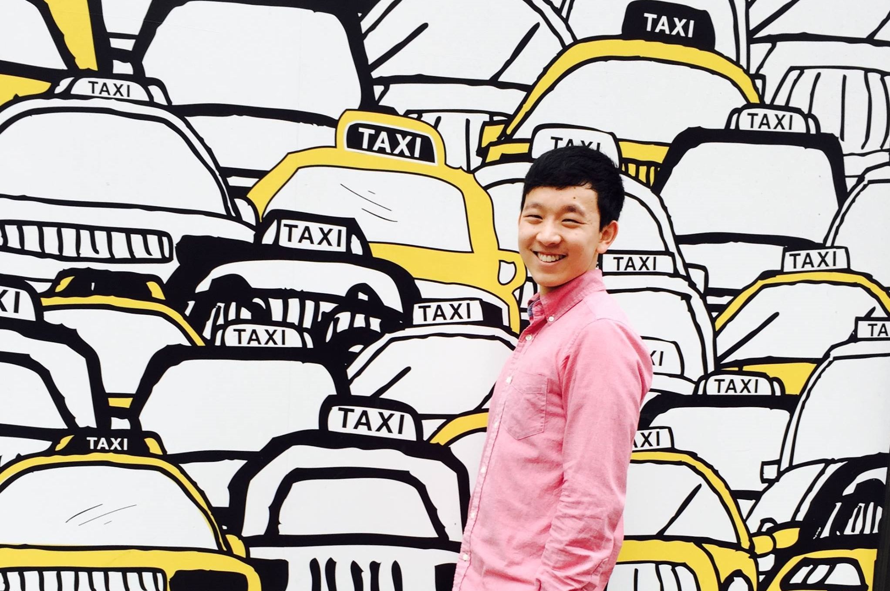
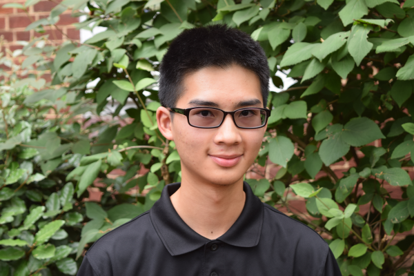
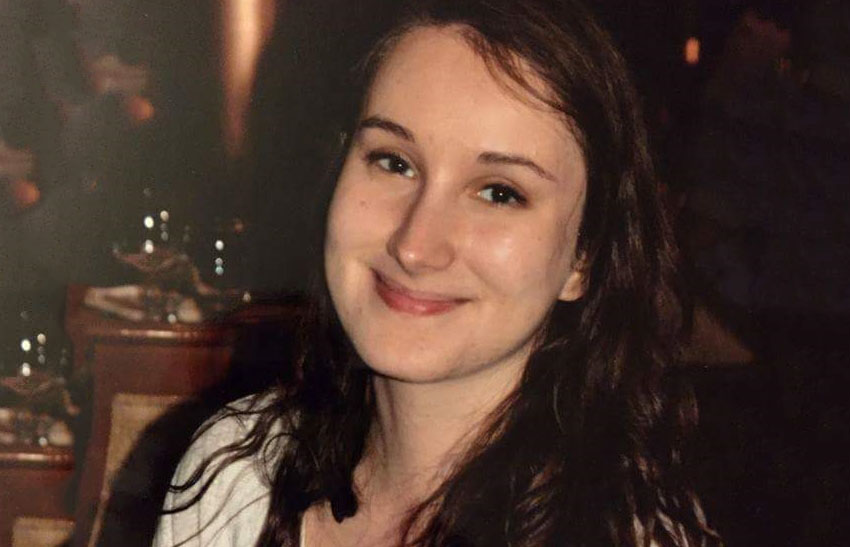
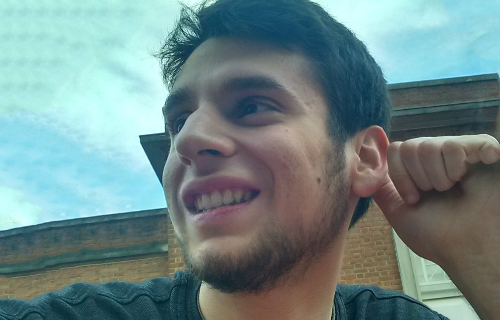
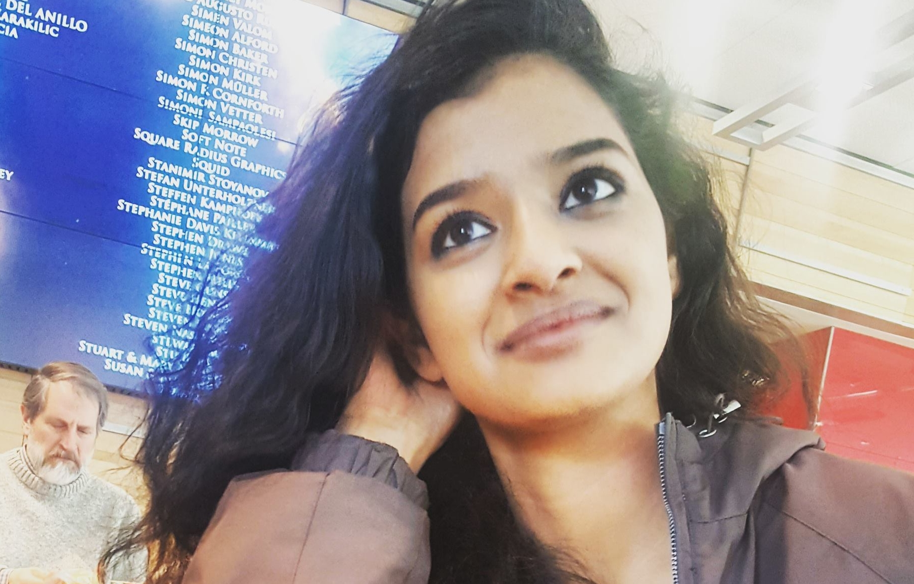
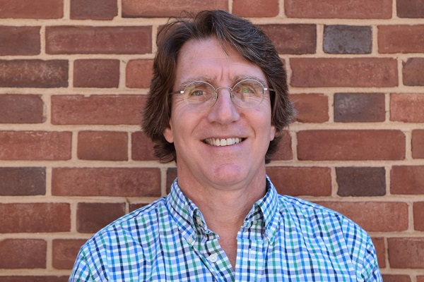
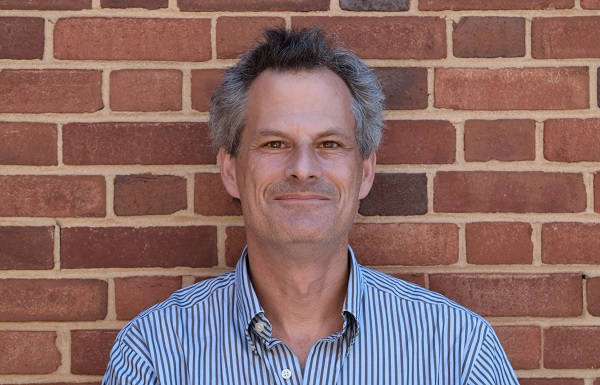

Students |
Advisors |
Acknowledgements |
|---|
Subhashini Arumugam is a freshman bioengineering major that aspires to go to medical school someday. Besides science, she is very interested in learning languages, writing, and political activism. She is also very passionate about dance, yoga, making breakfast, and taking naps. She hopes to gain research experience and exposure to the many facets of synthetic biology through iGEM, and looks forward to contributing to the team's outreach projects.
Jacob Premo is a freshman currently majoring in biochemistry and microbiology. He joined the UMaryland iGEM team in hopes of working with his peers on meaningful and unique research topics. After his undergraduate career, Jacob plans to pursue a PhD which he would like to put to use developing new medicines. Outside of his academic and research life Jacob enjoys reading books and watching sports.
Ben is a first-year student at the University of Maryland and is majoring in Mechanical Engineering and minoring in Computer Science. At this point in college, he still does not know his career path, but hopes that the experience of iGEM will help to give him some ideas. Outside of school, Ben can be found playing cards or board games with friends, reading, or slack-lining. Very recently, he has developed an interest in snorkeling and scuba diving.
SangHo is a freshman biochemistry and neurobiology & physiology double major in the Integrated Life Sciences program, who primarily joined iGEM to work on their wiki and website design, while gaining exposure to how the wet labs work. He hopes to one day attend medical school in the future but is interested in research as well. Outside of iGEM he enjoys web programming, reading the news, and playing video games.
Seth is a freshman biochemistry major at the University of Maryland, but he's switching into bioengineering. Outside of science his favorite things to do are play basketball and write fiction. His favorite food is probably pizza and his favorite animal is definitely the elephant. Another kind of interesting fact about him is that he is vegetarian. That's pretty much all you need to know about Seth!
Introducing Maria Novitskaya! Maria is a rising sophomore majoring in Neurobiology and Physiology and plans to minor in either Business, Computer Science, or Spanish. Outside of iGEM, Maria is involved in Circle K International and is training to be an Integrated Life Sciences section leader and an Images tour guide...go Terps! Aside from science, Maria is passionate about the color green, loves watching movies and documentaries, and makes great guacamole.
Presenting Nancy Zhang! Nancy is a freshman majoring in Neurology & Physiology and is also a part of the ILS program in the Honors College. Aside from her strong focus in science, Nancy has a great passion for art and devotes her spare time to arts, crafts and sculpture, therefore she brings an artistic touch in addition to years of research experience. She hopes to be able to unite different disciplines like engineering, graphic design, and wet lab work in research to help the team create a strong project this year!
Chaoyang is a freshman studying Neurobiology and Physiology with a minor in Music Performance in the Integrated Life Sciences Program. Aspiring to become a surgeon one day, Chaoyang is an Executive Board Member of the American Medical Student Association. He has researched 2 summers at an Adult Stem Cell lab at the NIH and hopes to contribute his lab experience to the iGEM team.
Chaoyang has also recently partaken in an Alternative Spring Break to New York City to join the movement to end the stigma against HIV and AIDS. Outside of academics, he enjoys playing piano and has played in various renowned locales, including Carnegie Hall and the Millennium Stage at the Kennedy Center. Among his many wins are first prize at the 29th annual International Young Artist Piano Competition. Chaoyang also enjoys taking artsy pictures and loves hanging out with friends.
Hailing from Singapore and Australia, Chun Mun's strong interest in genetic engineering prompted him to join iGEM. He hopes to conduct research in this field after attaining an MD/PhD. Outside of school, he is a self proclaimed piano prodigy, having won consecutive local competitions and finalizing in international ones. He can solve a Rubik's cube in a very slow average of 17 seconds and is an avid video gamer. He is actually not a weeaboo as some aspects of his profile may suggest.
|  |  | |
|  |  | |
|  |
Edward Eisenstein is a Fellow in the Institute for Bioscience and Biotechnology Research and an Associate Professor in the Fischell Department of Bioengineering at the University of Maryland. Trained in modern structural enzymology, his current research interests are focused on protein and biosystem engineering for discovery and application in plants and microorganisms.
Jason D. Kahn is a biophysical chemist who studies protein-nucleic acid interaction and engineering. He is best known for studies of DNA looping, bending, twisting, and cyclization, as well as hybridization thermodynamics for modified bases. He teaches a variety of chemistry, biochemistry, and molecular biology courses, which he credits for initiating his interest in synthetic biology. Dr. Kahn was a graduate student at UC Berkeley and a post-doc at Yale before coming to Maryland in 1994.
Dr. Quimby is Associate Director of the Integrated Life Sciences honors program in the Honors College at the University of Maryland. Prior to joining the Department of Cell Biology and Molecular Genetics at UMD as a full-time instructor, she earned her Master's of Arts in teaching from the University of South Carolina, after which she taught high school science in Atlanta, Georgia for eight years. She then returned to graduate school and received her doctorate in genetics and molecular biology from Emory University.
|  |  |